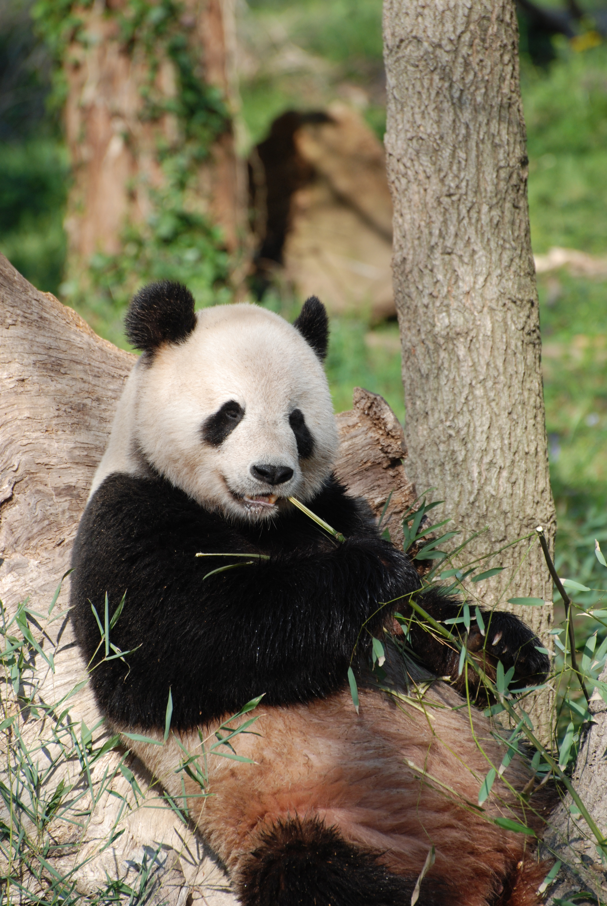

Pandas - Camila Cruz Cordova
Pandas - Camila Cruz Cordova
DESCUBRIENDO EL MUNDO DE LOS PANDAS
El oso panda (Ailuropoda melanoleuca), o panda gigante, es un mamífero carnívoro nativo de las montañas de China central, famoso por su pelaje blanco y negro y su dieta casi exclusiva de bambú.
. Son animales solitarios, trepadores ágiles, considerados un símbolo de conservación por la WWF.

CARACTERÍSTICAS DE LOS PANDAS
- El oso panda (Ailuropoda melanoleuca) es un mamífero característico por su pelaje blanco y negro, nativo de las montañas del centro de China.
Todos los derechos reservados
Camila Cruz Cordova
3 A
20/04/2026
Esc. Prep. Fed. por Coop. Profr. "Augusto Hernández Olive"